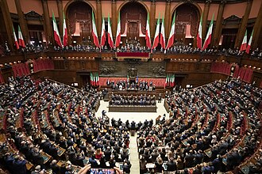
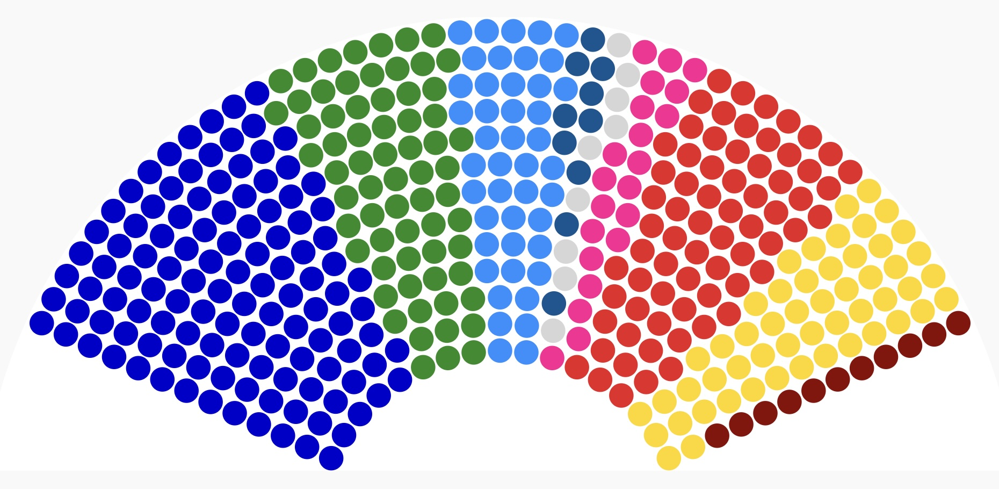

IL PARLAMENTO¶
{kind=link}

Il Parlamento è il titolare del potere legislativo. In Italia è composto da due camere che hanno lo stesso potere, cioè bicameralismo perfetto, e sono la:
CAMERA DEI DEPUTATI, sede Montecitorio
SENATO DELLA REPUBBLICA, sede Palazzo Madama
Normalmente le 2 camere si riuniscono e lavorano in modo diviso. Solo in alcuni casi si riuniscono in seduta comune, ad esempio quando:
NOMINARE PDR;
ELEGGERE un 1/3 ELEMENTO DELLA CORTE COSTITUZIONALE;
QUANDO deve eleggere i membri del CSM (Consiglio Superiore della Magistratura);
QUANDO deve mettere in ACCUSA IL PRESIDENTE DELLA REPUBBLICA.
Il Parlamento ha una carica di 5 anni (chiamata legislatura) e si possono rieleggere tutti i giorni. Nella Camera che è composta da 400 deputati, sono tutti eletti dal popolo, mentre il Senato, composto da 200 membri, i 5 Senatori a vita e gli ex Presidenti della Repubblica non sono eletti dal popolo e entrano in carica per tutta la vita.
FUNZIONAMENTO DELLE CAMERE¶
Ogni camera ha un Presidente che ha il compito di dirigere i lavori, dare la parola e togliere la parola durante le discussioni, è eletto a maggioranza dalla camera di appartenenza.
{kind=link}
Successivamente ci sono i gruppi parlamentari e c’è l’unione di più parlamentari in un tema politico. Ogni gruppo decide ogni rappresentante o li rappresenta. I gruppi deliberano in piena libertà politica durante le votazioni ma negli orari parlamentari non sono vincolati al rispetto delle indicazioni del gruppo.
{kind=link}

Tra le commissioni parlamentari, gruppi di deputati e senatori esaminano una materia specifica che servono da filtro tra le proposte di legge e l’esame sulle stesse. Le commissioni convocate per materia ritengono che la proposta sia scadibile e viene poi la prova del che l’ordinamento diviene stretto.
Esistono 2 tipi di commissioni:
PERMANENTI, che fanno il filtro;
INCHIESTA, quando ci sono problemi a livello nazionale in cui bisogna indagare.
{kind=link}
IMMUNITA” Parlamentare
Il parlamentare quando esprime il suo pensiero è insindacabile, quindi nessuno lo può processare per quello che dice. Inoltre se commette dei reati e deve essere processato, occorre ottenere l’autorizzazione della camera di appartenenza se non viene colto in flagranza o in atto.
{kind=link}
Infine ogni parlamnetare prendo un indennità (Stipendio) il cui importo è deciso dalla camera di appartenenza.